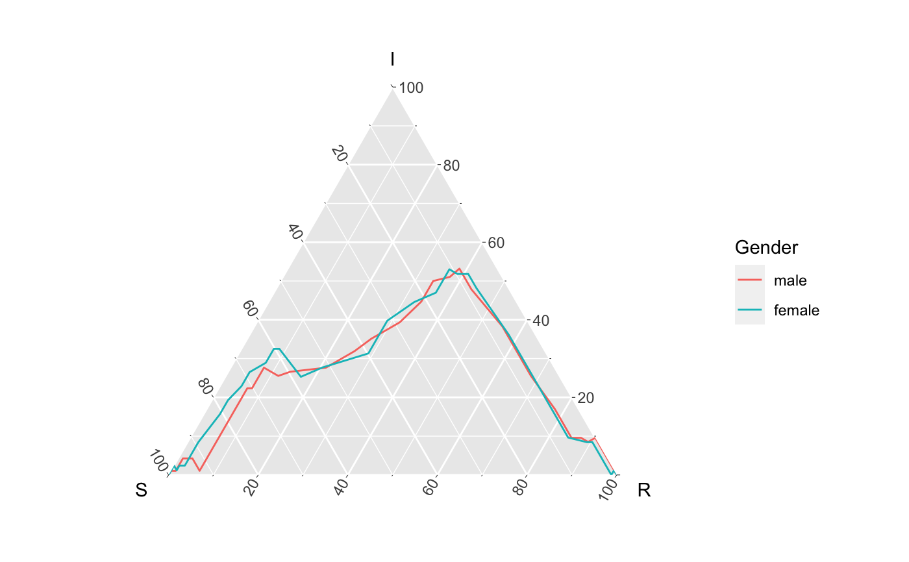
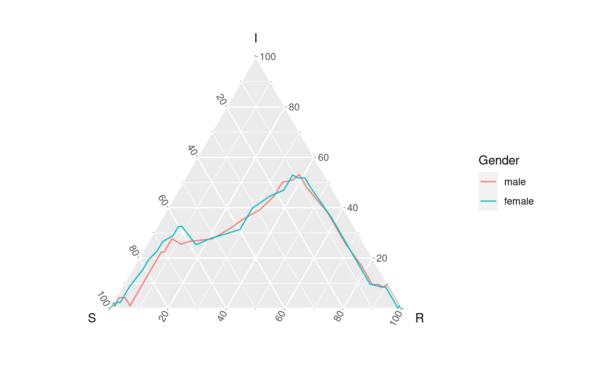

R/geom-aggregate.R, R/stat-aggregate.R
stat_aggregate.Rdaggregate SIR path visuals from agent data
geom_aggregate( mapping = NULL, data = NULL, stat = StatSirAggregate, position = "identity", ..., na.rm = FALSE, show.legend = NA, inherit.aes = TRUE ) stat_aggregate( mapping = NULL, data = NULL, geom = "path", position = "identity", na.rm = FALSE, show.legend = NA, inherit.aes = TRUE, ... )
| mapping | Set of aesthetic mappings created by
|
|---|---|
| data | The data to be displayed in this layer. There are three options: If A A function will be called with a single argument, the plot data. The return value must be a data.frame, and will be used as the layer data. A function can be created from a formula (e.g. ~ head(.x, 10)). |
| stat | Override the default connection between |
| position | Position adjustment, either as a string, or the result of a call to a position adjustment function |
| ... | Other arguments passed on to |
| na.rm | when using the default Stat or Geom this parameter doesn't matter
as If not using either of these (which means this geom/stat doesn't need to be
used), then if |
| show.legend | logical. Should this layer be included in the legends?
|
| inherit.aes | If |
| geom | Override the default connection between |
This visual leverage the function agents_to_aggregate
underneath. This function converts individual agents' information on when the
agent transitions between 3 different states (ordered), to create a temporal
tally/aggregation of how many agents are in what state at each integer time
point. In this visualization tool, the user provides y and z to
present the agent enters the second and third state (respectively).
As mentioned in parameter details, agents_to_aggregate encodes
NA to capture information, and as such, the default
y raw time when initially infected (or more
generally when the agent enters the second state)
z raw time when started recovery (or more generally
when the agent enters the third state)
group
...
Learn more about setting these aesthetics in
vignette("ggplot2-specs").
library(ggplot2) library(dplyr) library(ggtern); EpiCompare:::update_approved_layers() # ^ this generally need not be done # geom_aggregate EpiCompare::hagelloch_raw %>% filter(SEX %in% c("male", "female")) %>% ggplot(., aes(y = tI, z = tR, color = SEX)) + geom_aggregate() + coord_tern() + labs(x = "S", y = "I", z = "R", color = "Gender")#># stat_aggregate EpiCompare::hagelloch_raw %>% filter(SEX %in% c("male", "female")) %>% ggplot(., aes(y = tI, z = tR, color = SEX)) + geom_path(stat = StatSirAggregate) + coord_tern() + labs(x = "S", y = "I", z = "R", color = "Gender")#>EpiCompare::hagelloch_raw %>% dplyr::filter(SEX %in% c("male", "female")) %>% ggplot(., aes(y = tI, z = tR, color = SEX)) + stat_aggregate(geom = "path") + # note geom = "path" is the default coord_tern() + labs(x = "S", y = "I", z = "R", color = "Gender")#>